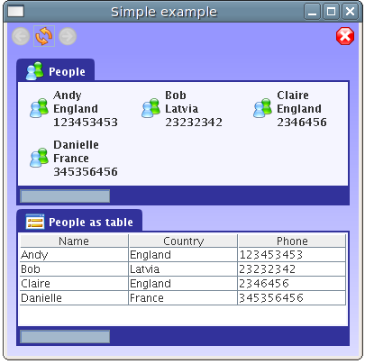

Ocula is an extensible open source rapid application development platform that uses XML as its description language, BeanShell as its scripting language and Java/Swing as its underlying technology. It aims to allow users of the library to quickly develop simple to use and aesthetically pleasing user interfaces.
It uses certain concepts present in the familiar browser metaphor (back, forward, stop, refresh) to allow the user to navigate through the user interface. Each page is represented by one XML file.
It provides a generic set of actions, renderers, frames and, in the future, page validators. Users of Ocula are not limited to the generic set provided by Ocula, considering that it is very easy to extend Ocula by adding more of the referred items. This is achieved by implementing the appropriate interface(s) and adding the new class(es) to the appropriate text file(s). Ocula uses the commons-discovery library to find these new classes. For more information consult the javadoc.
Actions provide a way to execute certain behaviour over the page through specific XML tags. An example is the <load> action that loads a specific page:
<load url="example2.xml"/>
The RunScriptAction is one of the most interesting ones and deserves further analysis (for more information on the other actions, consult the javadoc). This action runs an arbitrary BeanShell script, pulling the specified bound variables out of the interpreter context and into the Ocula instance. This can be pretty powerful as it allows XML files to be dynamic. The examples bundled with Ocula make extensive use of this feature.
Frames are self-contained panels that are responsible for dealing with things like the layout and certain aspects of the appearance of their components. Some frames also provide features like a progress bar and a caption. A simple example that uses GridFrame and TableFrame is displayed below.

Renderers define the presentation of model objects, allowing an Object to be mapped to a JComponent. This provides a simple but powerful way to customise the representation in Ocula of objects supplied by the user.